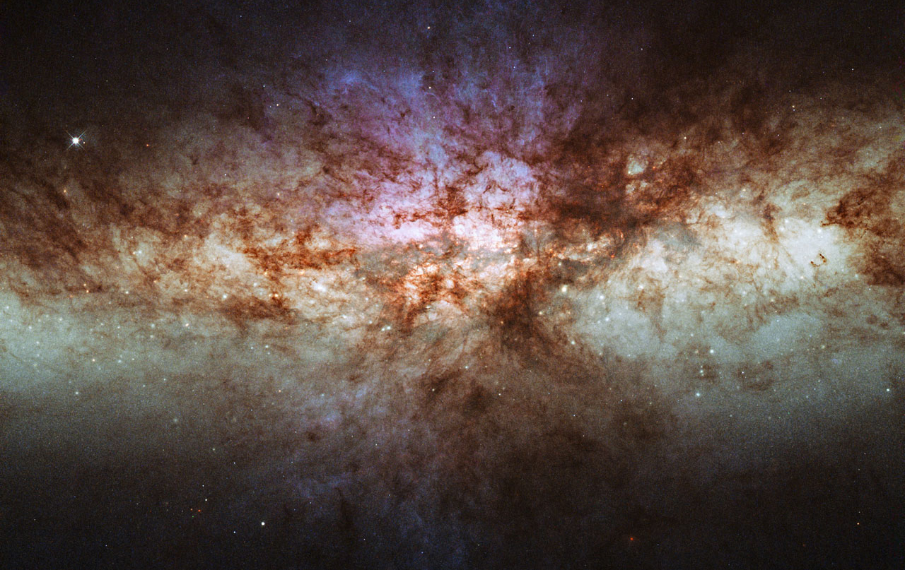
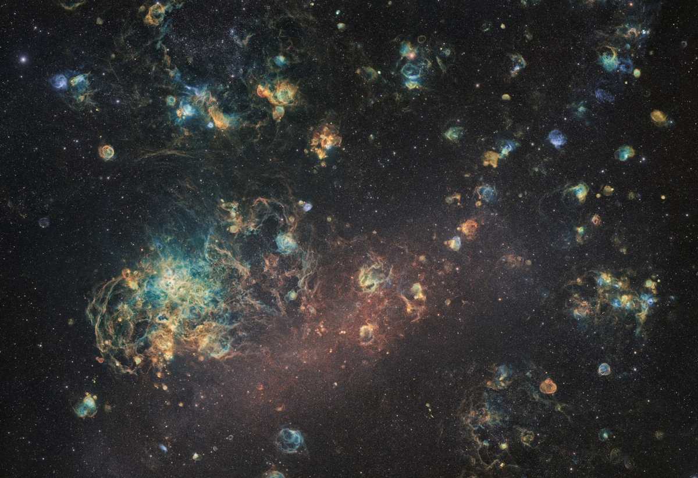
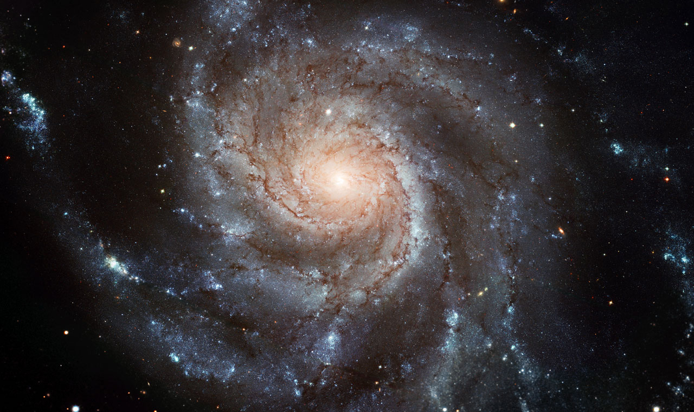

The Andromeda Galaxy (IPA: /ænˈdrɒmɪdə/), also known as Messier 31, M31,
or NGC 224 and originally the Andromeda Nebula (see below), is a barred
spiral galaxy approximately 2.5 million light-years (770 kiloparsecs)
from Earth and the nearest major galaxy to the Milky Way. The galaxy's
name stems from the area of Earth's sky in which it appears, the
constellation of Andromeda, which itself is named after the Ethiopian
(or Phoenician) princess who was the wife of Perseus in Greek mythology.
The virial mass of the Andromeda Galaxy is of the same order of
magnitude as that of the Milky Way, at 1 trillion solar masses (2.0×1042
kilograms). The mass of either galaxy is difficult to estimate with any
accuracy, but it was long thought that the Andromeda Galaxy is more
massive than the Milky Way by a margin of some 25% to 50%. This has been
called into question by a 2018 study that cited a lower estimate on the
mass of the Andromeda Galaxy, combined with preliminary reports on a
2019 study estimating a higher mass of the Milky Way.[13][14] The
Andromeda Galaxy has a diameter of about 220,000 ly (67 kpc), making it
the largest member of the Local Group in terms of extension, if not
mass.[citation needed] The number of stars contained in the Andromeda
Galaxy is estimated at one trillion (1×1012), or roughly twice the
number estimated for the Milky Way.[needs update] The Milky Way and
Andromeda galaxies are expected to collide in around 4.5 billion years,
merging to form a giant elliptical galaxy or a large lenticular galaxy.
With an apparent magnitude of 3.4, the Andromeda Galaxy is among the
brightest of the Messier objects, making it visible to the naked eye
from Earth on moonless nights, even when viewed from areas with moderate
light pollution.

also known as NGC 3034, Cigar Galaxy or M82) is a starburst galaxy
approximately 12 million light-years away in the constellation Ursa
Major. A member of the M81 Group, it is about five times more luminous
than the whole Milky Way and has a center one hundred times more
luminous than our galaxy's center.The starburst activity is thought to
have been triggered by interaction with neighboring galaxy M81. As the
closest starburst galaxy to Earth, M82 is the prototypical example of
this galaxy type. SN 2014J, a type Ia supernova, was discovered in the
galaxy on 21 January 2014.[8][9][10] In 2014, in studying M82,
scientists discovered the brightest pulsar yet known, designated M82 X-2
Discovery M82 was first discovered by Johann Elert Bode on 31 December
1774 together with M81; he described it as a "nebulous patch", about
0.75 deg away from M81, "very pale and of elongated shape". In 1779,
Pierre Méchain independently rediscovered both galaxies and reported
them to Charles Messier, who added them to his catalog M82 was
previously believed to be an irregular galaxy. In 2005, however, two
symmetric spiral arms were discovered in near-infrared (NIR) images of
M82. The arms were detected by subtracting an axisymmetric exponential
disk from the NIR images. Even though the arms were detected in NIR
images, they are bluer than the disk. The arms were previously missed
due to M82's high disk surface brightness, the nearly edge-on view of
this galaxy (~80°),[7] and obscuration by a complex network of dusty
filaments in its optical images. These arms emanate from the ends of the
NIR bar and can be followed for the length of 3 disc scales. Assuming
that the northern part of M82 is nearer to us, as most of the literature
does, the observed sense of rotation implies trailing arms.

The Large Magellanic Cloud (LMC) is a satellite galaxy of the Milky
Way.[5] At a distance of around 50 kiloparsecs (≈163,000
light-years),[2][6][7][8] the LMC is the second- or third-closest galaxy
to the Milky Way, after the Sagittarius Dwarf Spheroidal (~16 kpc) and
the possible dwarf irregular galaxy known as the Canis Major
Overdensity. Based on readily visible stars and a mass of approximately
10 billion solar masses, the diameter of the LMC is about 14,000
light-years (4.3 kpc), making it roughly one one-hundredth as massive as
the Milky Way.[3] This makes the LMC the fourth-largest galaxy in the
Local Group, after the Andromeda Galaxy (M31), the Milky Way, and the
Triangulum Galaxy (M33). The LMC is classified as a Magellanic
spiral.[9] It contains a stellar bar that is geometrically off-center,
suggesting that it was a barred dwarf spiral galaxy before its spiral
arms were disrupted, likely by tidal interactions from the Small
Magellanic Cloud (SMC) and the Milky Way's gravity. With a declination
of about −70°, the LMC is visible as a faint "cloud" from the southern
hemisphere of the Earth and from as far north as 20° N. It straddles the
constellations Dorado and Mensa and has an apparent length of about 10°
to the naked eye, 20 times the Moon's diameter, from dark sites away
from light pollution. History of observation Small part of the Large
Magellanic Cloud Although both clouds have been easily visible for
southern nighttime observers well back into prehistory, the first known
written mention of the Large Magellanic Cloud was by the Persian
astronomer 'Abd al-Rahman al-Sufi Shirazi (later known in Europe as
"Azophi"), in his Book of Fixed Stars around 964 AD. The next recorded
observation was in 1503–1504 by Amerigo Vespucci in a letter about his
third voyage. In this letter he mentions "three Canopes [sic], two
bright and one obscure"; "bright" refers to the two Magellanic Clouds,
and "obscure" refers to the Coalsack. Ferdinand Magellan sighted the LMC
on his voyage in 1519 and his writings brought it into common Western
knowledge. The galaxy now bears his name. The galaxy and southern end of
Dorado are in the current epoch at opposition on about 5 December when
thus visible from sunset to sunrise from equatorial points such as
Ecuador, the Congos, Uganda, Kenya and Indonesia and for part of the
night in nearby months. Below about 28° south the galaxy is always
sufficiently above the horizon to be considered properly circumpolar,
thus spring and autumn also are seasons of much-of-night visibility, and
the height of winter in June nearly coincides with closest proximity to
the Sun's apparent position. Measurements with the Hubble Space
Telescope, announced in 2006, suggest the Large and Small Magellanic
Clouds may be moving too fast to be orbiting the Milky Way.

The Pinwheel Galaxy (also known as Messier 101, M101 or NGC 5457) is a
face-on spiral galaxy distanced 21 million light-years (6.4
megaparsecs)[3] away from Earth in the constellation Ursa Major. It was
discovered by Pierre Méchain on March 27, 1781 and was communicated to
Charles Messier, who verified its position for inclusion in the Messier
Catalogue as one of its final entries. On February 28, 2006, NASA and
the European Space Agency released a very detailed image of the Pinwheel
Galaxy, which was the largest and most-detailed image of a galaxy by
Hubble Space Telescope at the time.[8] The image was composed of 51
individual exposures, plus some extra ground-based photos. On August 24,
2011, a Type Ia supernova, SN 2011fe, was discovered in M101. Pierre
Méchain, the discoverer of Messier 101, described it as a "nebula
without star, very obscure and pretty large, 6' to 7' in diameter,
between the left hand of Bootes and the tail of the great Bear. It is
difficult to distinguish when one lits the [grating] wires." William
Herschel noted in 1784 that "...in my 7-, 10-, and 20-feet [focal
length] reflectors shewed a mottled kind of nebulosity, which I shall
call resolvable; so that I expect my present telescope will, perhaps,
render the stars visible of which I suppose them to be composed." Lord
Rosse observed M101 in his 72-inch-diameter Newtonian reflector during
the second half of the 19th century. He was the first to make extensive
note of the spiral structure and made several sketches.[9] To observe
the spiral structure in modern instruments requires a fairly large
instrument, very dark skies, and a low-power eyepiece.